한국어 선택
한국어 선택 


자연치아 오래 쓰기
치아가 흔들리거나 깨지고 주변에 염증이 생겨
주변 뼈가 줄어든 치아,
바로 빼야만 할까요?
보존 치료 가능성을 충분히 검토했는데도 상태가 좋아지지 않을 때,
그다음에 치아를 빼는 방법을 논의해도 됩니다.
자연치아부터 보존하기
이 문구에는 온담길치과가 자연치아 보존을 먼저 검토한다는 진료 원칙을 담았습니다.
“남아 있는 자연치아부터 살펴보기”가 온담길치과의 기본 진료 순서입니다.
자연치아 한 개의
가치를 생각하면 먼저 살려 볼 이유가 충분합니다
치아가 움직이거나 아픈 증상이 오래 이어지면
치아를 빼고 임플란트를 하는 방법부터 떠올리기 쉽습니다.
임플란트는 기존의 틀니나 보철과 비교하면
나은 선택일 수 있지만,
살릴 수 있는 자연치아보다 앞서는 방법은 아닙니다.
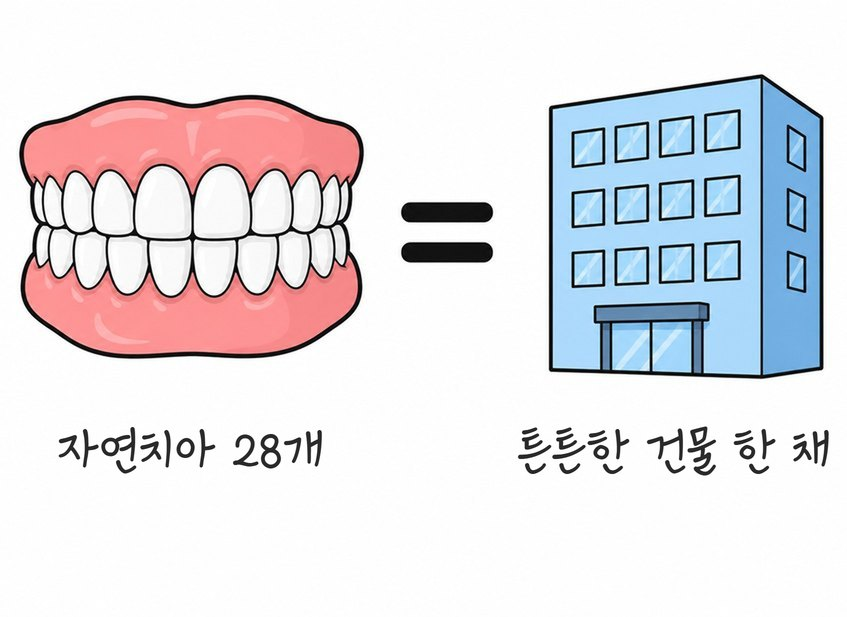
온담길치과에 내원하시면
건물의 바탕을 다지듯
잇몸 염증을
가장 먼저 치료합니다.
치과에 방문했을 때 곧바로 치아를 빼고
고정체를 놓기 전에 자연치아 보존 가능성을 먼저 봅니다.
잇몸의 염증과 위생 상태를 먼저 치료한 다음
보존 가능성이 있는 치아부터 치료하는
필요한 단계를 건너뛰지 않아야 합니다.
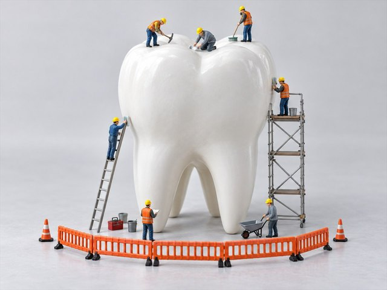
치아를 대신할 방법을 고르기 전, 잇몸 치료부터 확인하는 까닭
잇몸 질환과 여러 전신질환에는 겹치는 위험 요인이 있습니다.
잇몸 질환과 전신질환은
겹치는 위험 요인이 있습니다.
잇몸 질환은 세균과 염증이 오래 이어지는 질환으로,
전신 건강 문제와 생활 습관 요인이 일부 겹칠 수 있습니다.
흡연과 식습관, 위생관리 방식은 잇몸 염증을 심하게 만들 수 있으며,
잇몸의 만성 염증은 심혈관계·혈압·혈당·신장·뼈 건강과도 관련이 있어 함께 관리해야 합니다.
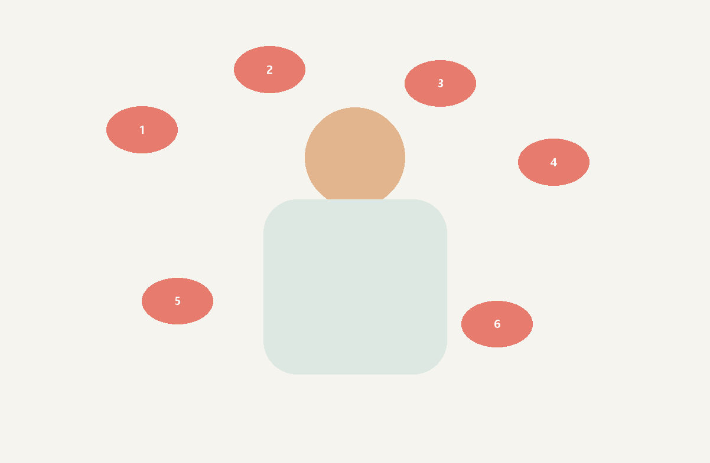
고정체 시술 전에 잇몸 염증을 충분히 치료해
입안 염증과 위생 상태가 좋아지면
몸 전체의 건강을 관리하는 데도
보탬이 될 수 있고
임플란트 시술 때 몸에 가는
부담을 덜 수 있으며,
임플란트를 오래 안정적으로
쓸 가능성도 높아집니다.
남은 치아를 더 오래 사용하고,
상태에 따라 빼야 하는 치아 수를 줄일 가능성이 있습니다.
지금 잇몸 염증 때문에 치아가 움직이고,
당장 발치해야 할 듯한 치아도
잇몸 치료를
마치고 나면
빼지 않고 남겨서
자연치아를 쓰는 기간을 더 늘릴 수 있는 경우도 있습니다.
빼야 하는 치아가 줄어들면
필요한 임플란트 수도 줄어들 수 있고,
전체 진료 범위와 비용도 함께 달라질 수 있습니다.
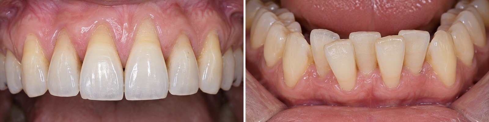
[임플란트 계획 전에 잇몸 치료를 검토하는 경우]
-
잇몸 치료를 먼저 하면 치아를 뺀 뒤의 불편을 낮출 수 있습니다.
잇몸 진료 뒤에도 살리기 어려워
치아를 빼야 하는 경우에도
뺀 뒤 생길 수 있는 염증과 불편을 낮추는 데 도움이 됩니다.잇몸 염증을 먼저 치료하지 않은 채
치아를 빼면
그 자리의 붓기와 불편이 커지는
경우를 진료실에서 자주 보기 때문입니다.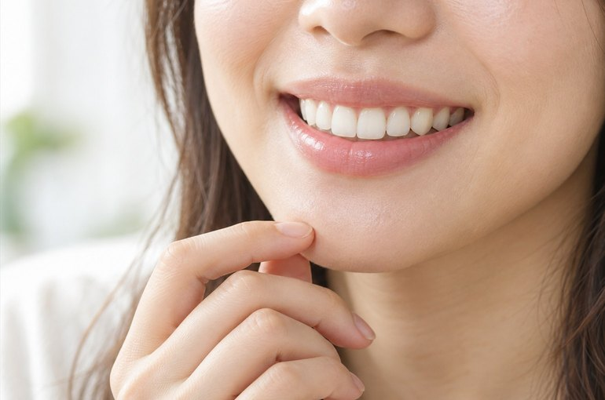
-
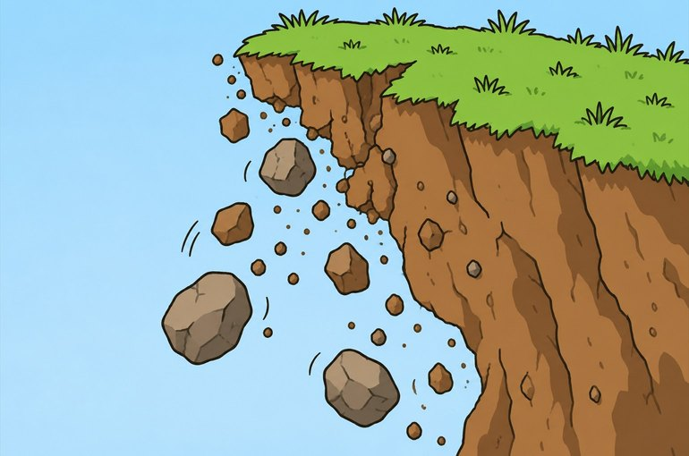
임플란트 계획 전에 잇몸 염증과 뼈 상태부터 확인
고정체가 지지될 환경을 만드는
잇몸뼈와 위생 상태부터 정돈잇몸 염증을 먼저 다루지 않은 채
치아를 뺀 뒤 바로 임플란트를 진행하면
옆 치아 주변의 염증 때문에
고정체가 뼈와 안정적으로 결합하기 어려울 수 있고,
임플란트 주변에 염증이 생길 위험도 커질 수 있습니다.다져진 바탕 위의 건물이
오랫동안 버틸 수 있듯
잇몸 치료로
남아 있는 염증을 가라앉히고,
위생 상태를 개선한 뒤 임플란트를 계획하면
시술할 때 붓기와
불편을 낮추고 시술을 마친 뒤에도
고정체가 자리 잡을 수 있는 환경을 마련하는 데 도움이 됩니다.
온담길 시니어케어 치주치료 과정
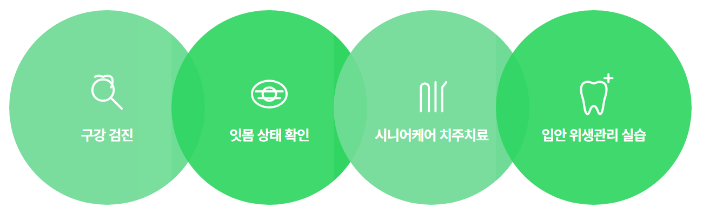

-
01
구강 검진
필요한 진료 분야의 의료진이 함께 검사
용도에 맞는 촬영 장비로 상태 확인
-
-
02
잇몸 상태 확인
검사 결과에 따른 개인별
잇몸 진료 계획 수립 -
-
03
온담길 시니어케어 치주치료
예방관리 담당자가 위생 상태를 직접 확인
자극을 줄인 스케일링
레이저 잇몸 치료
-
-
04
입안 위생관리 실습
집에서 하는 구강관리 안내
15년 진료 경험의
자연치아 보존 담당
치과보존 진료 의료진
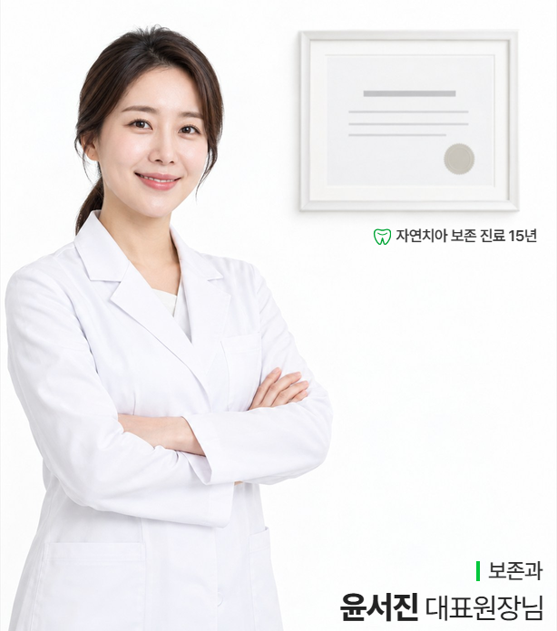
치료해서 남길 가능성이 있는 자연치아를 두고도,
진료 단계가 여러 번 이어진다는 이유로 치아를 빼는 방법부터 고르는
곳도 있습니다.
하지만 온담길치과에서는
치과보존 진료 경험을 갖춘
의료진이
직접 상태를 확인하고, 치아를 빼기 전에 보존 방법부터 찾는 것을
진료의 기본 원칙으로 두고 있습니다.
치과보존 진료는 치아 모양과 씹는 기능을
가능한 오래 남기는 일을
중심으로 보는 진료 분야이며,
치과보존과 수련을 마친의료진이
함께 상태를 살핍니다.
온담길치과는 분야별 진료 경험을 함께 활용해
필요한 촬영과 검사로
남아 있는 치아의 보존 가능성을 먼저
함께 살펴 결정합니다.
보존 가능한 치아를 바로 빼지 않으며,
남아 있는 치아를 가능한 오래 사용할 수 있도록
가능한 방법을 끝까지 살핍니다.
용도에 맞는 검사 장비를 이용한
온담길 시니어케어 치주치료 프로그램
-
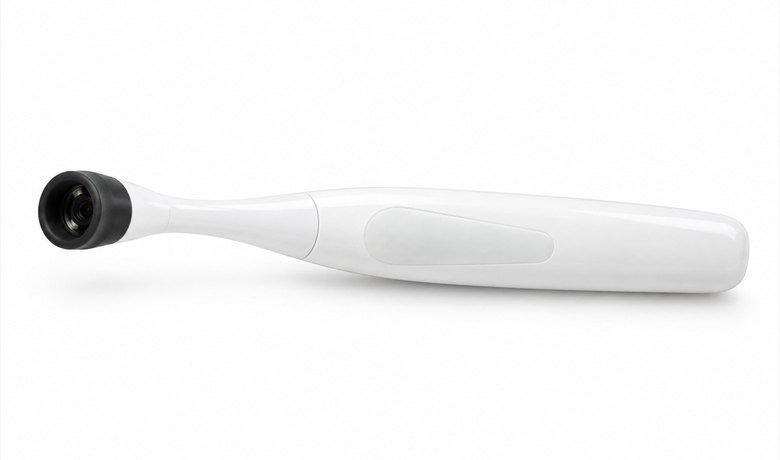
형광 촬영으로 치아 상태 확인
(형광 촬영 장비)형광 촬영 장비는 눈으로 찾기 어려운 치아 표면 변화와
치아와 잇몸 경계의 치태를 확인하는 보조 검사에 활용할 수 있습니다.
형광 촬영 자료는 치아 균열이 의심되는 부위를 살필 때
다른 검사와 함께 진단과 예방 진료를 돕는 자료로 사용합니다. -
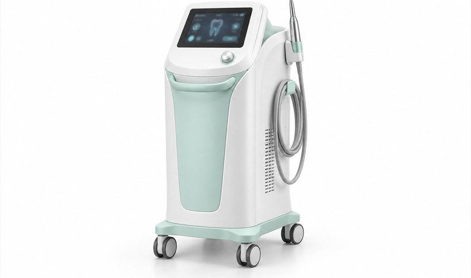
고주파 방식 잇몸 치료 장비
(플라즈마 방식)에너지 기반 잇몸 치료 장비는 잇몸 주머니 안쪽의
염증 부위를 관리하는 보조 수단으로 사용하며 적용 여부는 의료진이 판단합니다.
입마름이나 구내염이 있는 경우에도 상태를 먼저 진단한 뒤 필요한 치료 방법을 선택합니다.
신경치료를 받은 치아는 정기 촬영과 교합 점검으로 경과를 살핍니다.
온담길 시니어케어 치주치료로
자연치아 보존 진료 기록
-
RECORD 01
치아 마모가 심한 치아의 보존 과정
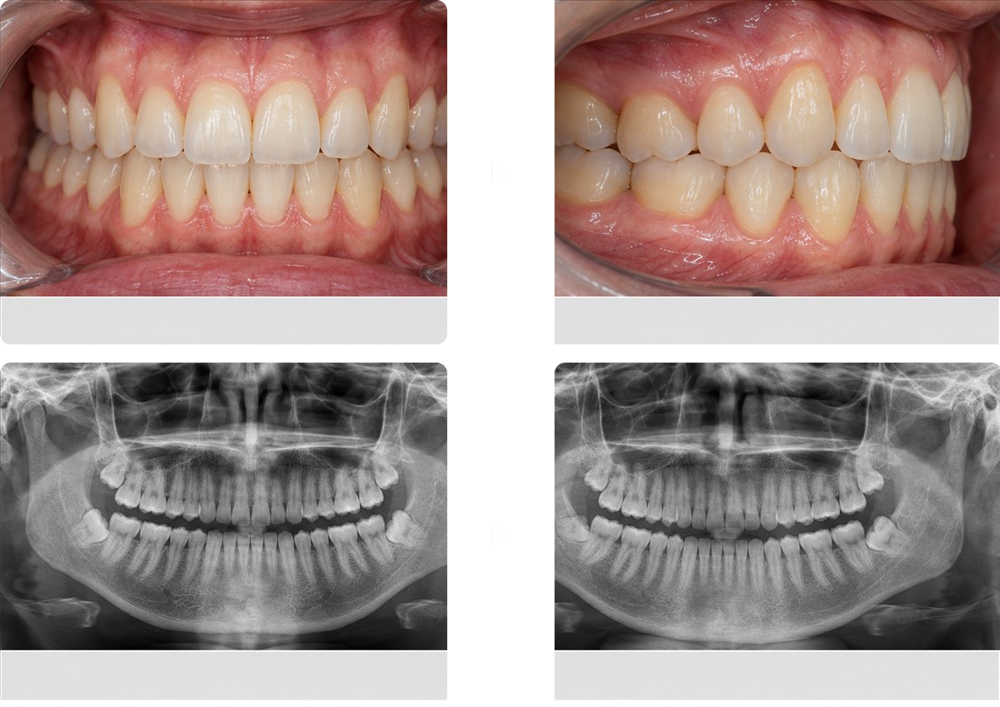
-
RECORD 02
치아 마모가 심한 치아의 보존 과정
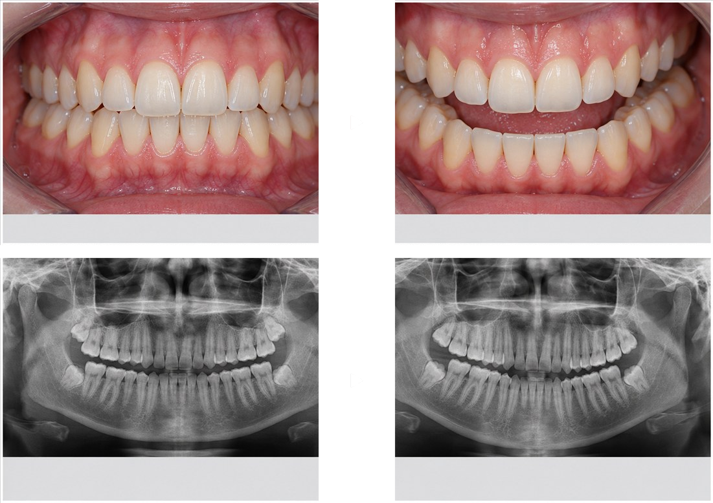
-
RECORD 03
치아 뿌리 주변 염증이 있는 치아의 보존 과정
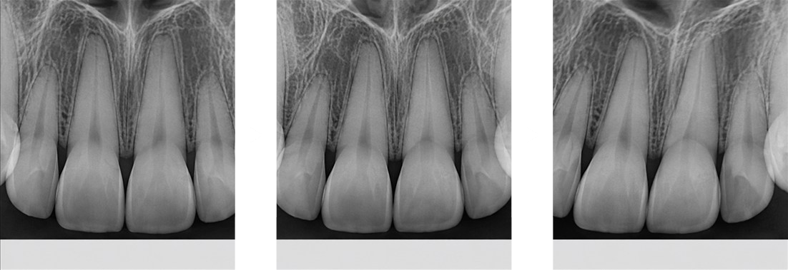
-
RECORD 04
치아 우식이 있는 치아의 보존 과정
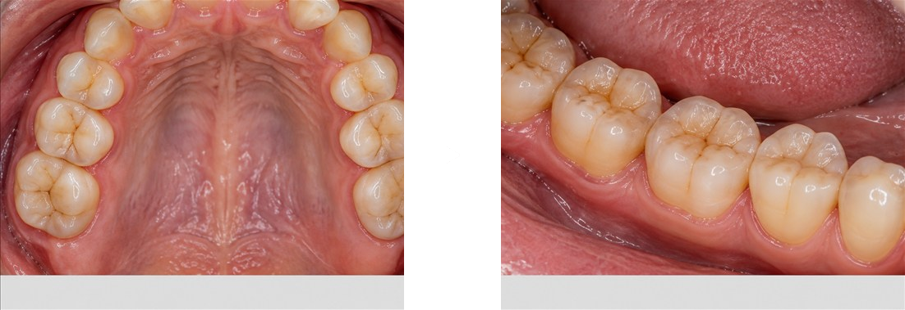
-
RECORD 05
치아 목 부분 마모가 있는 치아의 보존 과정
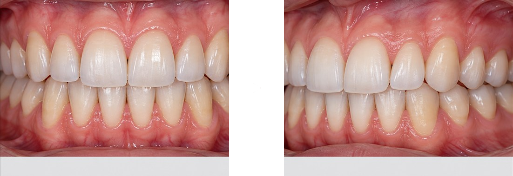
온담길 시니어케어 치주치료는
임플란트를 치과 진료의
마지막 방법으로 남겨 둘 수 있도록
살릴 수 있는
치아를 찾는 방법을 증례 회의에서 함께 검토합니다.
 상담 안내
상담 안내  전화 문의
전화 문의  카카오톡 문의
카카오톡 문의